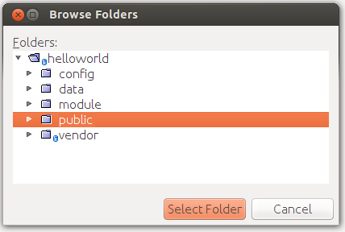
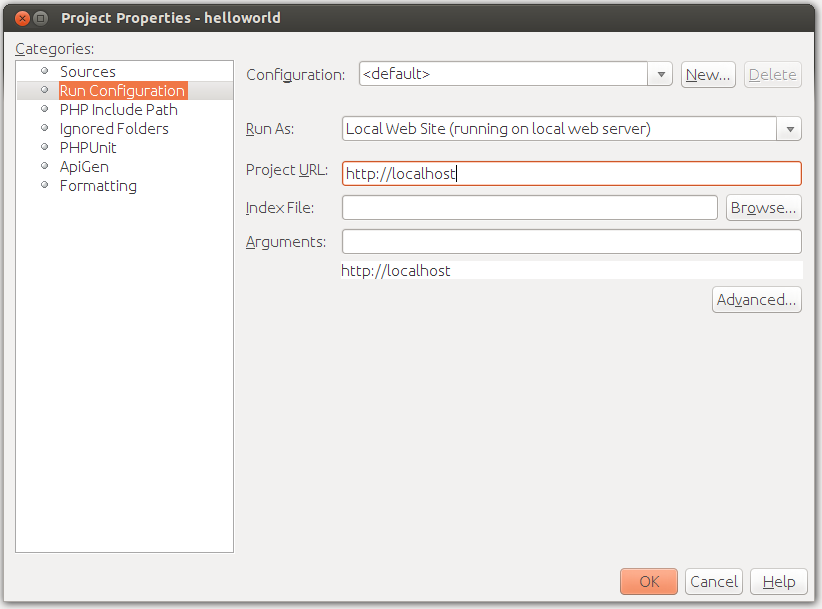
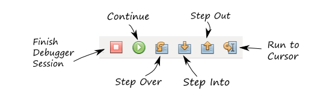

Appendix B. Introduction to PHP Development in NetBeans IDE
In this book, we use NetBeans IDE for developing Zend Framework 3 based applications. In Appendix A. Configuring Web Development Environment, we have installed NetBeans IDE. Here we will provide some useful tips on using NetBeans for PHP programming. We will learn how to launch and interactively debug a ZF3-based website.
What if I want to use another IDE (not NetBeans) for developing my applications?
Well, you can use any IDE you want. The problem is that it is impossible to cover all IDEs for PHP development in this book. The author only provides instructions for NetBeans IDE. It would be easier for a beginner to use NetBeans IDE. Advanced developers may use an IDE of their choices.
Run Configuration
To be able to run and debug a website, you first need to edit the site's properties. To do that, in NetBeans' Projects pane, right-click on the project's name, and from context menu select Properties item. The project's Properties dialog will appear (shown in figure B.1).
 Figure B.1. Properties | Sources
Figure B.1. Properties | Sources
In the left pane of the dialog that appears, click the Sources node. In the right pane, edit the Web Root field to point to your website's APP_DIR/public directory. You can do this by clicking the Browse button to the right of the field. Then, in the dialog, click on the public directory and then click Select Folder button (shown in figure B.2).
 Figure B.2. Browse Folders Dialog
Next, click the Run Configuration node in the left pane. The right pane should display the run settings for your site (figure B.3).
 Figure B.3. Properties | Run Configuration
In the right pane, you can see that the current configuration is "default". As an option, you can create several run configurations.
Edit the fields as follows:
In the Run As field, select "Local Website (running on local web server)".
In the Project URL field, enter "http://localhost". If you configured your virtual host to listen on different port (say, on port 8080), enter the port number like this "http://localhost:8080".
Keep the Index File field empty, because Apache's mod_rewrite module will mask our actual index.php file.
In the Arguments field, you can specify which GET parameters to pass to your site through the URL string. Typically, you keep this field empty.
Finally, click the OK button to close the Properties dialog.
Running the Website
Running the website means opening it in your default web browser. To launch the site, press the Run button on the Run Toolbar (figure B.4). Alternatively, you can press F6 button on your keyboard.
 Figure B.4. Run Toolbar
Figure B.4. Run Toolbar
If everything is OK with your run configuration, the default web browser will be launched, and in the browser window, you will be able to see the Home page of the website.
The same effect would have typing "http://localhost/" in your browser, but NetBeans' run toolbar allows you to do that in a single click.
Site Debugging in NetBeans
The "conventional" debugging technique in PHP is putting the var_dump() function
in the code block that you want to examine:
var_dump($var);
exit;
The lines above would print the value of the $var variable to the browser's output
and then stop program execution. While this can be used for debugging even a complex
site, it makes the debugging a pain, because you have to type variable dump commands in your PHP source file,
then refresh your web page in the browser to see the output, then edit the source file again, until you
determine the reason of the problem.
In contrast, when you debug your website in NetBeans IDE, the PHP interpreter pauses program execution flow at every line where you set a breakpoint. This makes it possible to conveniently retrieve information about the current state of the program, like the values of the local variables and the call stack. You see the debugging information in NetBeans window in graphical form.
To be able to debug the site, you need to have the XDebug extension installed. If you haven't installed it yet, please refer to Appendix A. Configuring Web Development Environment for additional information on how to install it.
To start the debugging session, in NetBeans window, click the Debug button on the Run Toolbar (figure B.4). Alternatively, you can press the CTRL+F5 key combination on your keyboard.
If everything is OK, you should be able to see the current program counter on the first code line of the index.php file (shown in figure B.5):
 Figure B.5. Debugging Session
Figure B.5. Debugging Session
While the program is in paused state, your web browser's window is frozen, because the browser is waiting for data from the web server. Once you continue program execution, the browser receives the data, and displays the web page.
Debug Toolbar
You can resume/suspend program execution with the Debug Toolbar (see figure B.6):
 Figure B.6. Debug Toolbar
The Finish Debugger Session of the toolbar allows to stop the debugger. Press this button when you're done with debugging the program. The same effect would have pressing the SHIFT+F5 key combination.
Clicking the Continue button (or pressing F5 key) continues the program execution until the next breakpoint, or until the end of the program, if there are no more breakpoints.
The Step Over toolbar button (or pressing F8 key) moves the current program counter to the next line of the program.
The Step Into toolbar button (or pressing F7 key) moves the current program counter to the next line of the program, and if it is the function entry point, enters the function body. Use this when you want to investigate your code in-depth.
The Step Out toolbar button (CTRL+F7) allows to continue program execution until returning from the current function.
And Run to Cursor (F4) allows to continue program execution until the line of code where you place the cursor. This may be convenient if you want to skip some code block and pause at a certain line of your program.
Breakpoints
Typically, you set one or several breakpoints to the lines which you want to debug in step-by-step mode. To set a breakpoint, put your mouse to the left of the line of code where you want the breakpoint to appear and click on the line number. Alternatively, you can put the cursor caret to the line where you want to set a breakpoint and press CTRL+F8 key combination.
When you set the breakpoint, the line is marked with red color and a small red rectangle appears to the left of it (shown in figure B.7):
 Figure B.7. Setting a breakpoint
Figure B.7. Setting a breakpoint
Be careful not to set a breakpoint on an empty line or on a comment line. Such a breakpoint will be ignored by XDebug, and it will be marked by the "broken" square (see figure B.8 for example):
 Figure B.8. Inactive breakpoint
Figure B.8. Inactive breakpoint
You can travel between breakpoints with the F5 key press. This button continues program execution until it encounters the next breakpoint. Once the program flow comes to the breakpoint, the PHP interpreter becomes paused, and you can review the state of the program.
You can see the complete list of breakpoints you have set in the Breakpoints window (see figure B.9). The Breakpoints window is located in the bottom part of NetBeans window. In this window you can add new breakpoints or unset breakpoints that have already been set.
 Figure B.9. Breakpoints window
Figure B.9. Breakpoints window
Watching Variables
When the PHP interpreter is paused, you can conveniently watch the values of PHP variables. A simple way to browse a variable is just positioning the mouse cursor over the variable name inside of the code and waiting for a second. If the variable value can be evaluated, it will be displayed inside of a small pop up window.
Another way to watch variables is through the Variables window (shown in figure B.10), which is displayed in the bottom part of NetBeans window. The Variables window has three columns: Name, Type and Value.
 Figure B.10. Variables window
Figure B.10. Variables window
Mainly, you will be faced with three kinds of variables: super globals, locals and $this:
Super global variables are special PHP variables like
$_GET,$_POST,$_SERVER,$_COOKIESand so on. They typically contain server information and parameters passed by the web browser as part of HTTP request.Local variables are variables living in the scope of the current function (or class method). For example, in the Hello World application, if you place a breakpoint inside of the
IndexController::aboutAction(), the variable$zendFrameworkVerwill be a local variable.$this variable points to the current class instance, if the current code is being executed in context of a PHP class.
Some variables can be "expanded" (to expand a variable, you need to click on a triangle icon to the left of variable's name). For example, by clicking and expanding $this variable, you can watch all fields of the class instance. If you expand an array variable, you will be able to watch array items.
Using the Variables window it is possible not only to watch variable's value, but also to change the value on the fly. To do that, place your mouse cursor over the value column and click over it. The edit box appears, where you can set the new value of the variable.
Call Stack
The call stack displays the list of nested functions whose code is being executed at the moment (shown in the figure B.11). Each line of the call stack (also called a stack frame) contains the full name of the class, the name of the method within the class and line number. Moving down the stack, you can better understand the current execution state of the program.
 Figure B.11. Call Stack window
Figure B.11. Call Stack window
For example, in figure B.11, you can see that currently the IndexController::aboutAction()
is being executed, and this method was in turn called by the AbstractActionController::onDispatch() method,
and so on. We can walk the call stack until we reach the index.php file, which is the top of the stack.
You can also click a stack frame to see the place of the code that is currently being executed.
Debugging Options
NetBeans allows you to configure some aspects of the debugger's behavior. To open the Options dialog, select menu Tools->Options. In the dialog that appears, click the PHP tab, and in that tab, select Debugging subtab (figure B.12).
 Figure B.12. PHP Debugging Options
Figure B.12. PHP Debugging Options
You typically do not change most of these options, you just need to have an idea of what they do. These are the following debugging options:
The Debugger Port and Session ID parameters define how NetBeans connects to XDebug. By default, the port number is 9000. The port number should be the same as the debugger port you set in php.ini file when installing XDebug. The session name is by default "netbeans-xdebug". You typically do not change this value.
The Stop at First Line parameter makes the debugger to stop at the first line of your index.php file, instead of stopping at the first breakpoint. This may be annoying, so you may want to uncheck this option.
The Watches and Balloon Evaluation option group is disabled by default, because these may cause XDebug fault. You can enable these options only when you know what you are doing.
The Maximum Depth of Structures parameter sets whether nested structures (like nested arrays, objects in objects, etc.) will be visible or not. By default, the depth is set to 3.
The Maximum Number of Children option defines how many array items to display in Variables window. If you set this to, say 30, you will see only the first 30 items even when the array has more than 30 items.
The Show Requested URLs option, when enabled, displays the URL which is currently being processed. It prints the URL to an Output window.
The Debugger Console option allows to see the output of PHP scripts being debugged. The output is shown in the Output window. If you plan to use this feature, it is recommended to add
output_buffering = Offparameter in[xdebug]section of your php.ini file, otherwise the output may appear with delays.
Profiling
When your site is ready and working, you are typically interested in making it as fast and performing as possible. XDebug provides you with an ability to profile your website. Profiling means determining which class methods (or functions) spend what time to execute. This allows you to determine the "bottle neck" places in your code and address the performance issues.
For each HTTP request, the XDebug extension measures the amount of time a function executes,
and writes the profiling information to a file. Typically, the profiling info files are placed
into the system temporary directory (in Linux, to /tmp directory) and have names like
xdebug.out.<timestamp>, where the <timestamp> placeholder is the timestamp of the HTTP request.
All you have to do is to open a profiling file and analyze it.
To enable XDebug profiler, you should set the following XDebug configuration parameter in your xdebug.ini file:
xdebug.profiler_enable = 1
Unfortunately, NetBeans for PHP does not have an embedded tool for visualizing the profiling results. That's why you need to install a third-party visualizer tool. Below, we will provide instructions on how to install a simple web-based tool named Webgrind. Webgrind can work on any platform, because this tool itself is written in PHP.
Webgrind's installation is very straightforward.
First, you need to download webgrind from its project page and unpack it to some folder. In Linux, you can do this with the following commands:
cd ~
wget https://github.com/jokkedk/webgrind/archive/master.zip
unzip master.zip
The commands above will change your working directory to your home directory, then will download the Webgrind archive from the Internet, and then unpack the archive.
Next, you need to tell the Apache web server where to find Webgrind files. This means you need to configure a separate virtual host. We have already learned about virtual hosts in Appendix A. Configuring Web Development Environment. Do not forget to restart Apache web server after you have configured the virtual host.
Finally, open Webgrind in your browser by navigating to the URL of your Webgrind install. For example, if you configured the virtual host to listen on port 8080, enter "http://localhost:8080" in your browser's navigation bar and press Enter. The Webgrind web page should appear (see figure B.13):
 Figure B.13. Webgrind Output Page
Figure B.13. Webgrind Output Page
At the top of the Webgrind page, you can select the percentage of the "heaviest" function calls to show (figure B.14). By default, it is set to 90%. Setting this to a lower percentage will hide the functions called less often.
 Figure B.14. Webgrind Select
Figure B.14. Webgrind Select
The drop-down list to the right of percent field allows to select the profiling data file to analyze. By default, it is set to "Auto (newest)", which forces Webgrind to use the file with the most recent timestamp. You may need to select another file, for example, if your web pages use asynchronous AJAX requests.
The right-most drop-down list allows to set the units which should be used for measuring the data. Possible options are: percent (default), milliseconds and microseconds.
When you have selected the percentage, file name and units, click the Update button to let Webgrind to visualize the data for you (the calculation may take a few seconds). As the calculation finishes, you should be able to see the table of function calls, sorted in descending order by function "weight". The heaviest functions will be displayed at the top.
The table has the following columns:
The first column (Function), displays the class name followed by method name (in case of a method call) or function name (in case of a regular function).
The second column contains the "paragraph" icons, which can be clicked to open the corresponding PHP source file that function is defined in the web browser.
Invocation Count column displays the number of times the function was called.
Total Self Cost column shows the total time it took to execute the built-in PHP code in the function (excluding the time spent on executing other non-standard functions).
Total Inclusive Cost column contains the total execution time for the function, including built-in PHP code and any other user functions called.
Clicking a column header allows to sort data in ascending or descending order.
You can click the triangle icon next to a function name to expand a list of function invocations. This list allows you to see who called this function and what the amount of time spent is, and contains the following columns:
- Calls is the "parent" functions or class methods invoking this (child) function;
- Total Call Cost is the total time executing this function, when called from the parent function;
- Count - number of times the parent calls the child function.
The coloured bar at the top of the page displays the contribution of different function types:
- Blue denotes PHP internal (built-in) functions;
- Lavender is time taken to include (or require) PHP files;
- Green shows the contribution of your own class methods;
- Orange denotes time taken on traditional "procedural" functions (functions that are not part of a PHP classes).
Please note that the profiler creates a new data file in your /tmp directory for each HTTP request to your website. This may cause disk space exhaustion, which can be fixed only by rebooting your system. So, when you've finished profiling your application, it is recommended to disable the profiling by editing the php.ini file, commenting the
xdebug.profiler_enableparameter as follows, and then restarting the Apache web server.
;xdebug.profiler_enable = 0
Summary
In this appendix, we've learned how to use NetBeans IDE to run the website and debug it in interactive step-by-step mode. To be able to run a website, you first need to edit the site's properties (run configuration).
To debug the site, you need to have the XDebug PHP extension installed. When you debug your website in NetBeans, the PHP engine pauses program execution at every line where you set a breakpoint. You see the debugging information (like local variables and call stack) in NetBeans window in graphical form.
Along with debugging, XDebug extension also provides the ability to profile websites. With profiling, you see how much time was spent for execution of a certain function or class method. This allows you to determine the "bottle necks" and performance issues.